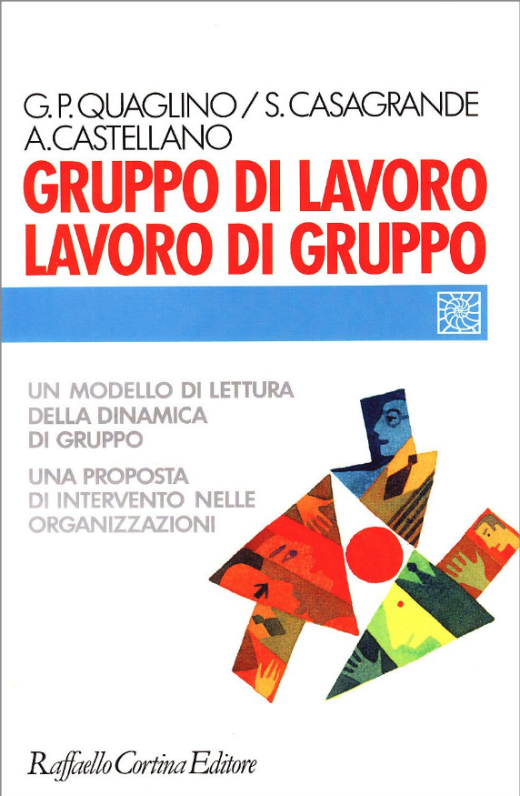

Understanding teams with
Watership Down

A group of individuals is not a team.
They can become a team.
If they have a common GOAL
The goal should be:
- discussed within the team
- explicit rather than implicit
- compatible with organisation goal
- supported by the organisation
- measurable
- doable
Roles cover these areas:
- result
- methodology
- innovation
- communication
Issues around roles:
- missing key areas
- leader-does-all
- member without role
Managing conflicts (some guidelines):
- never ignore
- do not blame but find causes
- negotiate and not barter
- talk facts and not opinions
- value different point of view
- value common points
- do not put proposal in conflict, but in relation
Emerging team characteristics:
Openess: how neat are the boundaries of the team?
Cohesion: do we share the same norms and values ?
Interdependence: how much we depend each other?
Fragmentation: can we recognise subgroups in the team?
Specialisation: are we able to cover all necessary functions?
Integration: do we accept each other ideas?
Do not use rabbit language with birds!
Take into consideration culture, roles, context
Institutional leader
Responsible for team's output, goal and resources
Leadership issues
- Lack of competence
- Tyrant leader
- Different from team expectations
Epilogue